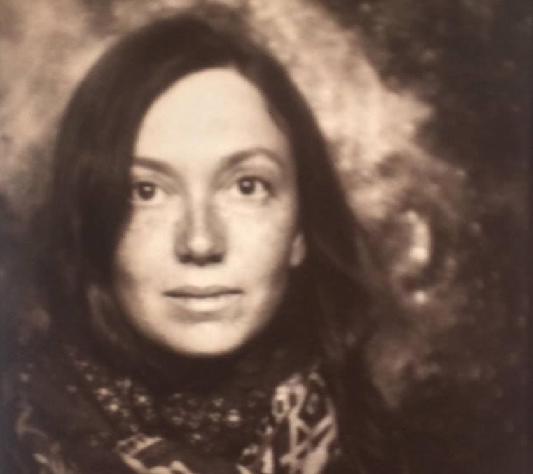

about
Alica Khaet is Germany (Halle) based artist with russian-israeli background. Studied at Burg Giebichenstein University of Art and Design Halle, Bezalel Academy of Art and Design Jerusalem, Academy of Arts, Architecture and Design, Prague. Makes graphic Art, Illustration, animated movies.
Alica Khaet |
 |
| 1988 |
geboren in Rostov am Don, Russland |
| 2005-06 |
Studium an der RSUH (Russian State University for the Humanities)/Moskau/
Fachbereich für Religionswissenschaften |
| 2006 |
Auswanderung nach Israel |
| Seit 2009 |
Leben und Familiengründung in Deutschland |
| Seit 2011 |
Studium an der Burg Giebichenstein Kunsthochschule Halle/Studiengang Grafik |
| 2015 |
Auslandsstudium an UMPRUM/Prag/Fachbereich für Animation |
| Außerdem diverse Solo- und Gruppenausstellungen in Deutschland, Russland und Israel
(Auswahl): |
| Gruppenausstellung “Der Mensch ist ein Geheimnis”, Dostoevskij Museum, St.Petersburg,
Russland (2014) |
| Soloausstellung in e.V. “Künstlerstadt Kalbe”, Deutschland (2015) |
| Gruppenausstellung in Lyonel-Feininger-Galerie, Quedlinburg, Deutschland (2015) |
| Gruppenaussellung “Entdeckungen. Die Bücher der Burg”, Galerie Volkspark, Halle (2016) |
| Gruppenausstellung und Gespräch “Land in Sicht?”, Rosa Dorn, Frauenzentrum Weiberwirtschaft, Halle (2018) |
| Diplomausstellung "ein Zuhause finden", Burg2Galerie, Halle (2018) |
|